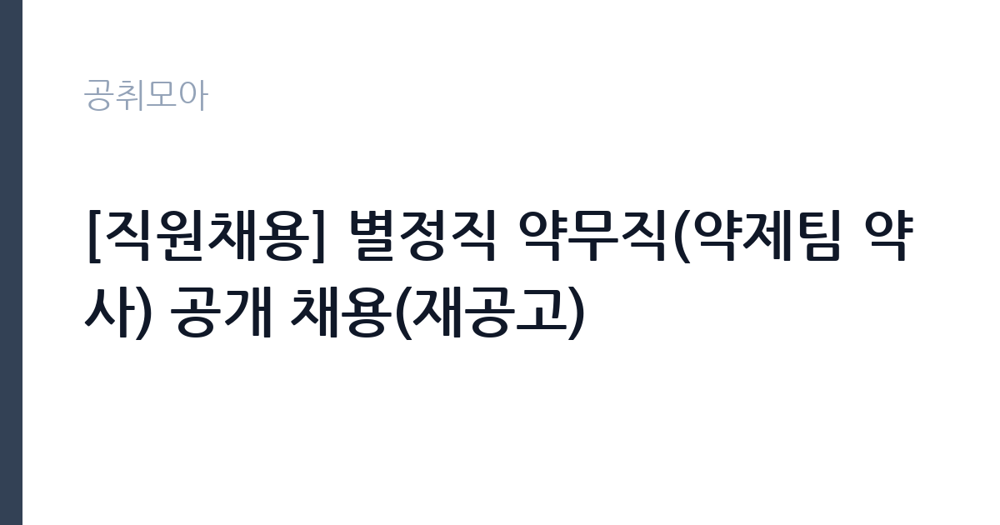

[공공기관] [직원채용] 별정직 약무직(약제팀 약사) 공개 채용(재공고)
동남권원자력의학원 · 부산 · 마감 2026-10-28 (D-14) · 출처 잡알리오

한눈에 보는 모집 조건
| 기관 | 동남권원자력의학원 |
|---|---|
| 공고명 | [직원채용] 별정직 약무직(약제팀 약사) 공개 채용(재공고) |
| 고용형태 | 정규직 |
| 근무지 | 부산 |
| 게시일 | 2026-10-15 |
| 마감일 | 2026-10-28 (D-14) |
지원자격, 이렇게 읽으세요
- 공공기관 채용공시
- 세부 조건은 원문 공고문 확인
지원자격의 핵심은 약사 면허 소지입니다. 면허가 없으면 지원 자체가 불가하므로 면허증 사본을 미리 준비하시기 바랍니다. 병역 기피 사실이 없어야 하며, 국가공무원법상 결격사유 등에 해당하지 않아야 합니다. 블라인드 채용 가이드라인이 적용되므로 출신학교 등 편견 유발 항목 기재에 유의하시기 바랍니다. 재공고라는 점이 함정이 아니라 기회일 수 있으니, 전회 차 탈락 사유로 추정되는 서류 미비를 점검하고 지원하시기 바랍니다.
이 공고의 포인트
이 공고의 포인트는 암 전문 병원의 야간 약제 업무라는 점입니다. 야간 약제 업무는 응급 조제와 입원환자 처방 검토, 마약류 관리 등 책임감이 요구되는 자리로, 병원 약사 경력의 출발점으로 좋습니다. 모집 인원이 1명이라 경쟁이 붙을 수 있지만 재공고라 지원자 풀이 좁을 수 있습니다. 별정직이라는 고용 형태의 처우와 계약 조건은 원문에서 반드시 확인하시기 바랍니다.
전형은 어떻게 진행되나
세부 전형 단계는 원문 공고문에서 확인하셔야 합니다. 병원 약사 채용은 일반적으로 서류전형과 면접으로 진행되며, 약사 면허와 실무 경력이 평가의 중심이 됩니다. 블라인드 채용 유의사항을 숙지하지 않아 불이익을 받지 않도록 공고문과 유의사항을 정독하시기 바랍니다. 야간 근무 가능 여부를 면접에서 직접 묻는 경우가 많으니 근무 조건에 대한 이해를 명확히 답하시기 바랍니다.
원문에서 확인한 전형 방식
과학기술정보통신부 산하 정부 출연연구기관인 동남권원자력의학원에서 21세기 암치료의 새빛을 열어갈 인재를 찾습니다. 우리 기관은 정부의 블라인드 채용 가이드라인에 따라 응시절차 및 방법을 준수하고 있습니다. 따라서 응시자는 모집 공고문과 블라인드 채용 유의사항을 잘 숙지하여 불이익이 발생하지 않도록 주의 바랍니다. 1. 모집부문: 별정직 약무직(약제팀 약사) 2. 모집인원: 1명 [직무내용] ㆍ약제팀 야간 약제 업무 전반 [필수사항] ㆍ약사 면허 소지자 ㆍ병역의 의무를 기피한 사실이 없는 자 ㆍ국가공무원법 제33조의 결격사유가 없는 자 ㆍ의학원 인사 및 채용 규정상 결격사유가 없는 자 ㆍ공고마감일 기준 위 기준을 모두 충족하는 자 [근무조건] ㆍ근 무 처 : 동남권원자력의학원(부산광역시 기장군 장안읍 좌동길 40) ㆍ급 여 : 내규에 따라 산정 ㆍ계약기간 : 채용 시 ~ 1년 ㆍ근무시간 : 17:30 ~ 08:30(3일마다 근무) [참고사항] · 의학원 사정에 의하여 타 부서로 배치 및 근무형태 전환 될 수 있음 [절차] 1. 서류심사 (채용예정인원의 7배수) 2. 면접전형 (채용예정인원
이런 분께 추천해요
- 병원 약사 경력을 시작하고 싶은 약사 면허 소지자
- 암 전문 병원의 약제 업무에 관심 있는 분
- 부산 기장 근무와 야간 근무가 가능한 분
지원 전 체크리스트
- 약사 면허증 사본을 준비했습니다
- 블라인드 채용 유의사항을 정독했습니다
- 별정직의 계약 조건과 처우를 원문에서 확인했습니다
- 야간 근무 가능 여부와 출퇴근 방안을 점검했습니다
모집 일정과 제출 타이밍
마감은 10월 28일이므로 약 일주일의 준비 기간이 있습니다. 면허 증빙과 경력 서류를 먼저 갖춰 마감 2일 전에는 접수를 마치는 것이 안전합니다. 서류 합격 후 면접이 11월 초에 이어질 수 있으니 해당 주 야간 일정은 조정해 두시기 바랍니다.
직무 이해하기: 공공기관
약제팀 야간 약제 업무는 입원환자 처방 조제와 검토, 응급 약품 공급, 마약류와 향정신성의약품 관리, 야간 당직 의료진과의 협업을 맡습니다. 암 전문 병원 특성상 항암제 조제와 무균 조제, 통증 관리 약물 처방 검토가 중요한 업무입니다. 야간에는 소수 인원으로 약제실 전체를 책임지므로 독립적인 판단력과 위기 대처 능력이 필요합니다.
자기소개서 작성 팁
병원 약사 지원서는 약사로서의 책임감과 환자 안전 의식을 보여주는 것이 핵심입니다. 실습이나 근무 중 처방 오류를 막은 경험, 복약 지도 경험 등을 구체적으로 쓰시기 바랍니다. 야간 업무의 특성을 이해하고 있으며 감당할 수 있다는 점을 근거와 함께 밝히시기 바랍니다. 암 전문 병원에 지원한 동기를 진료 특성과 연결하면 설득력이 높아집니다.
면접 준비 포인트
면접에서는 약사 실무 지식과 야간 근무 의지, 위기 대처 능력을 묻는 경우가 많습니다. 항암제와 마약류 관리, 처방 검토 프로세스에 대한 이해를 보여주시기 바랍니다. 야간 당직 중 응급 처방이 들어온 상황을 묻는 질문에는 절차 중심으로 답하시기 바랍니다. 부산 기장 근무와 야간 근무 가능 여부를 명확히 답하시기 바랍니다.
급여·근무조건 읽는 법
이 공고문에는 약사 보수 금액이 명시되어 있지 않으므로, 정확한 급여는 원문 공고문에서 확인하셔야 합니다. 참고로 동남권원자력의학원의 전체 평균연봉은 약 7,144만원 수준으로 알려져 있으나(잡코리아 기업정보 기준, 공식 공시 아님. 다른 집계에서는 8,721만원으로 안내되기도 하므로 출처별로 상이합니다), 별정직 약사의 보수는 이와 별도로 공고문에 정해지므로 혼동하지 마시기 바랍니다. 병원 약사 보수는 통상 기본급에 야간과 당직 수당 등이 더해지는 구조이며, 정확한 기본급과 수당, 상여 구분은 원문에서 확인하시기 바랍니다. 실수령액은 세전 총액에서 4대보험 본인부담금과 소득세를 제외한 금액이 됩니다.
자주 묻는 질문
- 필수 자격은 무엇인가요?
약사 면허 소지가 필수이며, 병역 기피 사실이 없어야 합니다. 세부 자격은 원문 공고문에서 확인하시기 바랍니다. - 별정직이란 무엇인가요?
별정직은 일반직과 구분되는 별도 정원과 처우 체계의 직종입니다. 계약 조건과 처우, 근무 형태는 원문 공고문에서 반드시 확인하시기 바랍니다. - 재공고라 불리한가요?
재공고는 전회 차에 적격자가 없었거나 정원을 채우지 못한 경우 다시 모집하는 것으로, 지원자에게는 경쟁 풀이 좁아질 수 있는 기회입니다. 전회 차와 달라진 조건이 있는지 원문을 대조하시기 바랍니다.
함께 보면 좋은 공고
[공공기관] 2026년 한국도로공사 교통량 조사 기간제 근로자(사무원) 채용공고 — 마감 2026-10-28[공공기관] 2026년도 제4분기 체험형 인턴 채용 공고(장애인 채용) — 마감 2026-10-29[공공기관] 2026년도 제4분기 체험형 인턴 채용 공고(인턴사무원) — 마감 2026-10-29출처: 잡알리오 공개정보를 바탕으로 공취모아가 정리한 안내글입니다. 모집 조건·일정은 변경될 수 있으니 지원 전 반드시 원문 공고문을 확인하세요. 본 글은 정보 제공용이며 합격을 보장하지 않습니다.